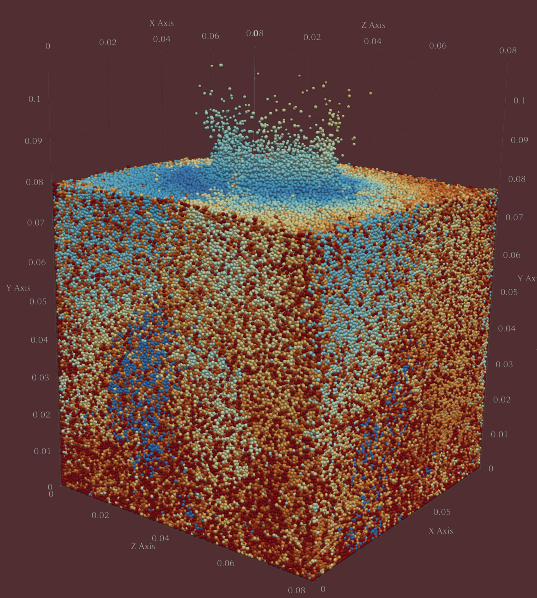

Home
Pysammos is a Python package for coarse-graining and simulation analysis.
Features:
Fast neighbor search with Numba acceleration
Flexible grid-based coarse-graining
Input/output for MFIX simulation data
{kind=link}

Who was the Sand Reckoner?
The Sand (psammos, in greek) Reckoner is a work by Archimedes, in which he endeavoured to determine the number of grains of sand that could fit in the universe. To do so, he invented a new system of large number notation, as the number system at that time could only express numbers up to a myriad (10,000). Our open source code is able to process any granular model in the universe no matter the number of grains! In fact, the more, the myriar.

Contents:
- Installation
- Examples
- Pysammos
- License
- GNU GENERAL PUBLIC LICENSE
- Preamble
- TERMS AND CONDITIONS
- 0. Definitions.
- 1. Source Code.
- 2. Basic Permissions.
- 3. Protecting Users' Legal Rights From Anti-Circumvention Law.
- 4. Conveying Verbatim Copies.
- 5. Conveying Modified Source Versions.
- 6. Conveying Non-Source Forms.
- 7. Additional Terms.
- 8. Termination.
- 9. Acceptance Not Required for Having Copies.
- 10. Automatic Licensing of Downstream Recipients.
- 11. Patents.
- 12. No Surrender of Others' Freedom.
- 13. Use with the GNU Affero General Public License.
- 14. Revised Versions of this License.
- 15. Disclaimer of Warranty.
- 16. Limitation of Liability.
- 17. Interpretation of Sections 15 and 16.